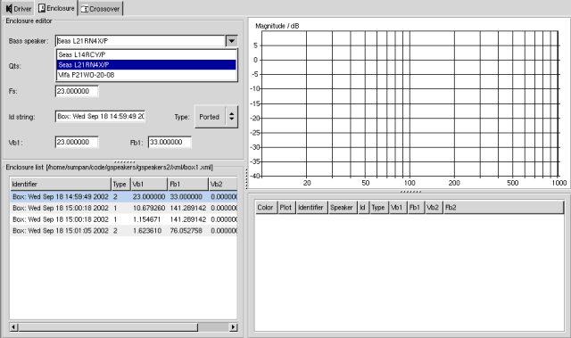
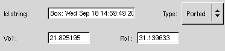
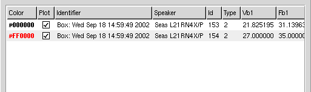
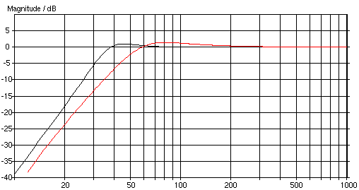

The Woofer Enclosure
Now we are going to work with the enclosures. Open the "Enclosure tab" (Figure 1) and choose the Seas woofer in the dropdown list.

Figure 1: Select the driver you want to work with on the enclosure tab.
Figure 2: Enclosure toolbar
Select the Seas woofer, select Ported in the type dropdown menu and click the Optimize toolbar button (see figure 2). Then GSpeakers will calculate the optimum volume and the optimum port tuning frequency for this particular woofer. The optimum volume is the enclosure volume which will give a flat and smooth frequnecy response in the bass region of frequency spectra.

Figure 3: the properties you can change for an enclosure
When you have clicked the Optimize button the Vb1 entry and the Fb1 entry will get new values. Vb1 represents the optimum volume and Fb1 represents the optimum port tuning frequency.
Now you may click on the Plot toolbar button.

Figure 4: frequency response for the optimum enclosure for the Seas woofer
As you can see in figure 4 a plot will appear in the plot window. This is a plot of a very smooth frequency response. If you change vb1 to 27 litres and fb1 to 31 Hz you will see a slightly different graph.
When you click the plot button input focus will be set to the vb1 entry, when you are done typing in a new volume you can press enter and input focus will be set to the fb1 entry. If you press enter in the fb1 entry after you have entered a new tuning frequency a new plot will be drawn and a new enclosure will be added to the list in the lower left hand corner of the enclosure notebook page. This "keyboard shortcuts" may increase you productivity when you get used to working with GSpeakers.

Figure 5: here is the two plots where the red plot is belongs to the 27 litres enclosure
In figure 5 you can see the two plots we have made so far. As you can see the two enclsoures will have approximately the same lower cutoff frequency but the larger enclosure will have a moderate 2dB peak at 45Hz. Why you would like to build an enclosure with such a peak in the frequnecy response is out of scope for this tutorial (remember, this is a tutorial on how to design speakers using GSpeakers, not a tutorial on speaker design).

Figure 6: the enclosure list
In figure 6 you can see the enclosure list. This is a list where the enclosures you work with get saved. If you click the Save or Save as toolbar buttons you can save this list to an xml file. Remember to save often and keep backups of your work. GSpeakers is still BETA software and might crash unexpectedly. Unsaved data will be lost if GSpeakers crashes. GSpeakers do not crash very often but it might happen.

Figure 7: the plot list
Figure 7 shows the plot list. This list views all plots you create. Using this list you can highlight, delete, hide or show a plot. The main pupose with this list is to enable you to inspect which plot that belongs to which woofer and enclosure.
From these two plots you can conclude that this enclosure will work very well in an enclosure around 25 litres. The lower cutoff frequency will be around 33 Hz which is very good for a 8 inch woofer in a 25 litres enclosure. Let us move on to the Vifa woofer.
Now you should be able to plot the frequency reponse graphs for a couple of enclosures using the Vifa woofer. Since we wanted a pretty small enclosure you should try to get as good performance as possible from a small enclosure. You will find that you will not be able to get the Vifa woofer to play as deep bass as the Seas woofer can do.

Figure 8: the plot shows the Seas woofer in an 27 litres enclosure (black line) and the Vifa woofer in an 30 litres enclosure (red line).

Figure 9: The plot list corresponding to the plot in figure 8
Figure 8 and 9 shows that the Vifa woofer in a 30 litres enclosure will have a lower cutoff frequency just under 50 Hz when the Seas woofer will cutoff at 33 Hz. This is a large difference and I would prefere to use the Seas woofer in our case. However, if we could accept a larger enclosure the Vifa woofer might be a good choice since it works almost as good as the Seas woofer in a larger enclosure. And the Vifa woofer is more affordable (at least in Sweden). Also if we wanted the woofer to play above 800 Hz the Vifa woofer is the only alternativet. But then again, the Seas woofer looks a lot cooler...:-) Anyway I will keep both woofers around when we are moving on to the crossover section just to show you how to handle the increasing frequency response magnitude of the Vifa woofer.
Let us now move on to a short chapter about midrange enclosures.